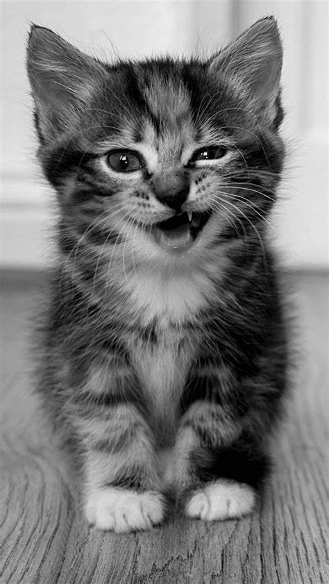
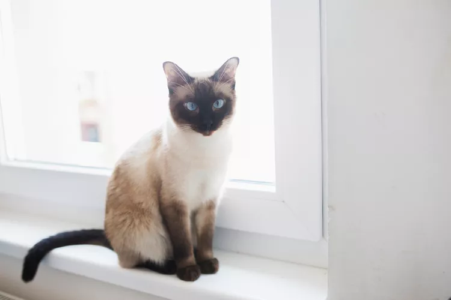
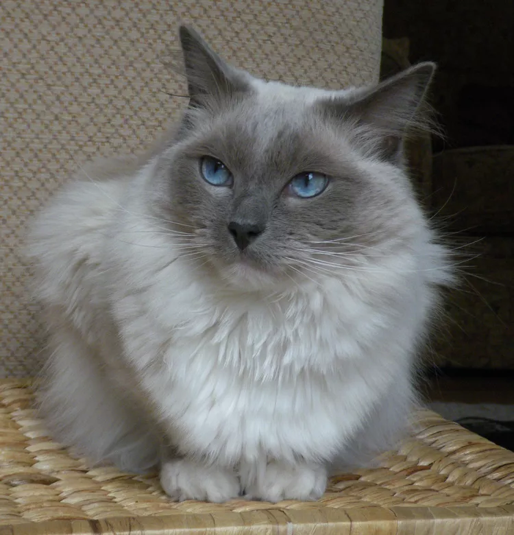
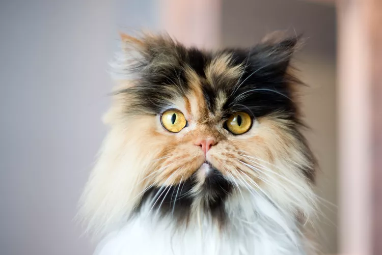
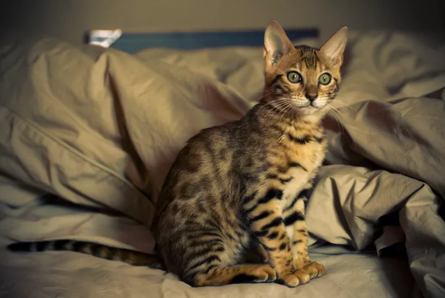
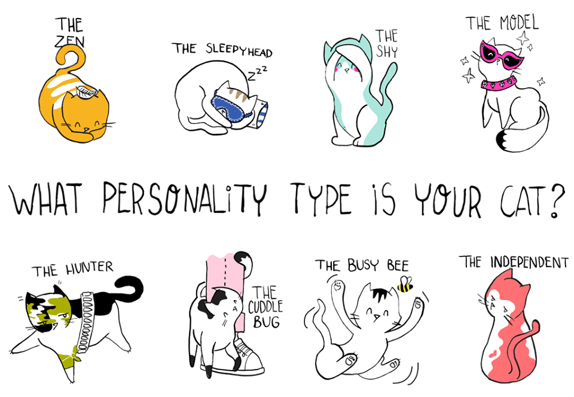
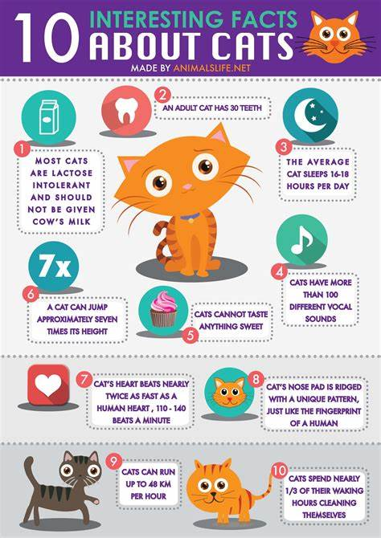
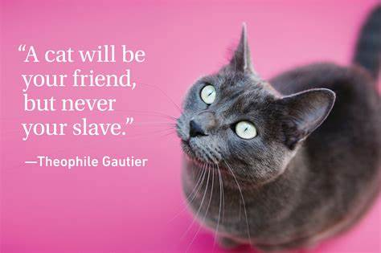

Get ready for a journey into the world of our furry pals – cats! These whisker-twitching, tail-waving creatures have a charm like no other. Join us for a quick tour celebrating the adorable quirks and lovable traits that make cats the purr-fect companions.
First up, let’s dive into the world of kittens! With playful pounces, curious eyes, and tiny meows,these little rascals are ure to make your heart melt. Enjoy a collection of cute images capturing the essence of kitten mischief.
Explore the cool cat club! Each cat breed is like a different flavor of ice cream – all deliciously unique. From the sleek Siamese to the fluffy Maine Coon, we've got pictures to showcase the diverse personalities and looks of these fancy felines.
   .webp "oriental shorthair")
Get to know your cat BFFs better! Cats aren’t just fluff – they’ve got personalities too. Whether your cat is a chill couch potato or a wild explorer, we've got images to show you the many faces of feline personalities.
Time for some cat trivia! Did you know cats have a special way of saying hello with their tails? Check out these fun facts paired with playful images to discover the little secrets and habits that make cats fascinating.
Get ready to LOL! Cats have a hilarious side, and we've captured it in action. From epic fails to cunning antics, these images will tickle your funny bone and make you appreciate the joy of living with a cat comedian.

Meet the celebrities of the cat world – not on the red carpet, but on your couch!

Explore pictures of cats who became famous on the internet, leaving paw prints in our hearts and making us laugh with their adorable escapades.
Spice up your cat's life with easy DIY toys! Follow simple steps with accompanying images to create fun and interactive toys that will keep your feline friend entertained and happy.
As we wrap up our furry adventure, enjoy some wise words about cats paired with charming images. It's a little moment to reflect on the unique and wonderful bond we share with these incredible creatures.

In this whirlwind tour of cat tales, we hope you've enjoyed the adorable snapshots of our feline friends. Whether you're a seasoned cat whisperer or a newbie cat enthusiast, there's always something new and delightful to discover in the whisker-ful world of cats.